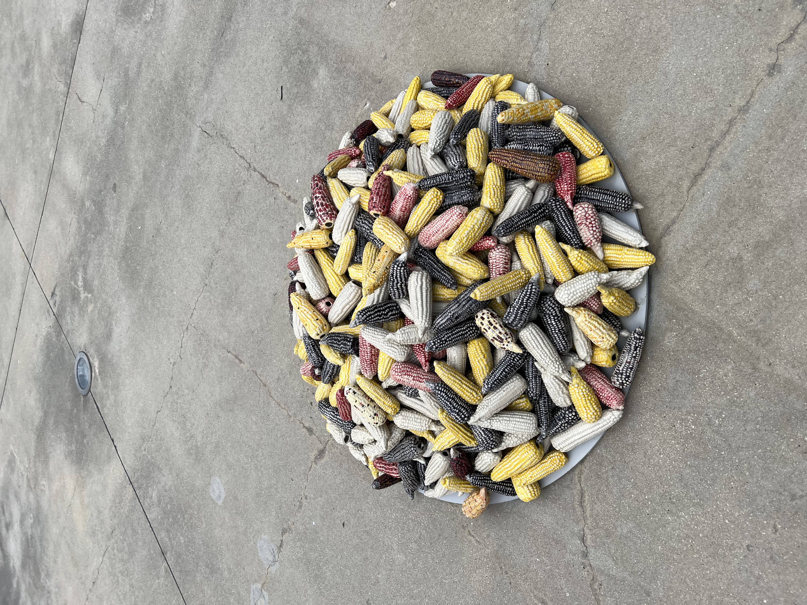
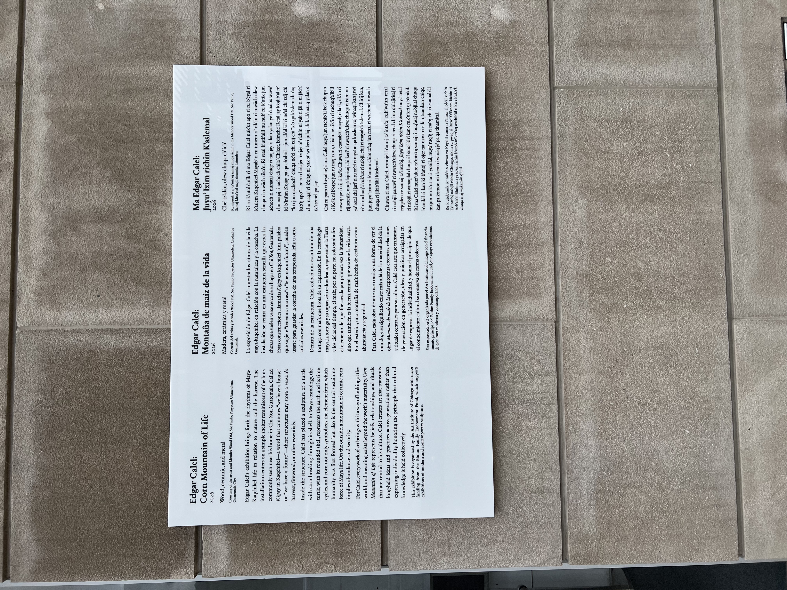

Rooted in our lives, corn was named the official Illinois state grain on January 1, 2018. Following Iowa, Illinois is the second largest state in the USA in corn production. Throughout vast fields, Illinois grows eleven million acres of this mighty grain, generating close to ten billion dollars annually. In Illinois, where agriculture drives the economy, corn is sweet and dominant. Moreover, exports are highly valued, and a major part of the corn produced in Illinois is traded nationally and worldwide, shipping to countries that include Mexico, Colombia, Japan, Spain, and Guatemala. The exported corn is mainly used for livestock feeding and food processing, making Illinois a powerful feeder globally.

The corn grain is ancient according to scientists, and its domestication began more than 9,000 years ago by the indigenous population of southern Mexico. (source) Today, the usage of corn is multifaceted and international, producing food (cereals, tortilla, polenta, grits), cooking oils, gasoline, whiskey, plastic, gels, various starch thickeners, and more. Due to present environmental challenges that require creative solutions, it is inspiring to learn about the progress made in corn production, ranging from improved plastic options to renewable fuel (a specific alcohol produced by fermenting sugars from corn), creating hopes for an improved future for earth and humanity.
Just as corn is paramount to Illinois, the historic grain is embedded in the lives of the Kaqchikel people, who are one of more than thirty indigenous Maya groups. In modern times, Maya peoples have turned from a monolith model to unique groups that include the Kaqchikel people. In the main, the Kaqchikel live in the midwestern highlands of Guatemala and southern Mexico.
Recently, Guatemalan Artist Edgar Calel (b. 1987) has created a corn-centered installation in Illinois, specifically at the Modern Wing of the Art Institute of Chicago, in the Bluhm Family Terrace. The outdoor public space presents stunning views of Millennium Park and the surrounding architecture. Calel’s installation is entitled “Edgar Calel: Corn Mountain of Life (Ixim Juyu K’aslem).” Calel, who is Maya Kaqchikel and whose first language is Kaqchikel, incorporates original words and symbols throughout his work. The installation is composed of several objects, and at the core, viewers encounter a hut made of recycled materials. Inside the hut there is a sculpture of a turtle with corn breaking through its shell. The hut appears similar to the ones near Calel’s home in Chi-Xot, built by families for winter storage of tools, harvest, and firewood. The turtle with its rounded shell represents the earth. The corn element that breaks through the turtle portrays the source of humanity and the central force of Mayan life. Outside the hut there is a mountain of ceramic corn that symbolizes abundance and security. Through art, Calel expresses his roots, culture, and community. Calel’s aesthetic forms portray the history and spiritual journey of his people.

“Edgar Calel: Corn Mountain of Life (Ixim Juyu K’aslem)” is curated by Giampaolo Bianconi, Dittmer Associate Curator, Modern and Contemporary Art. Calel’s work of everyday rural architecture from the midwestern highlands of Guatemala is exhibited at the Art Institute of Chicago through September 13, 2026.